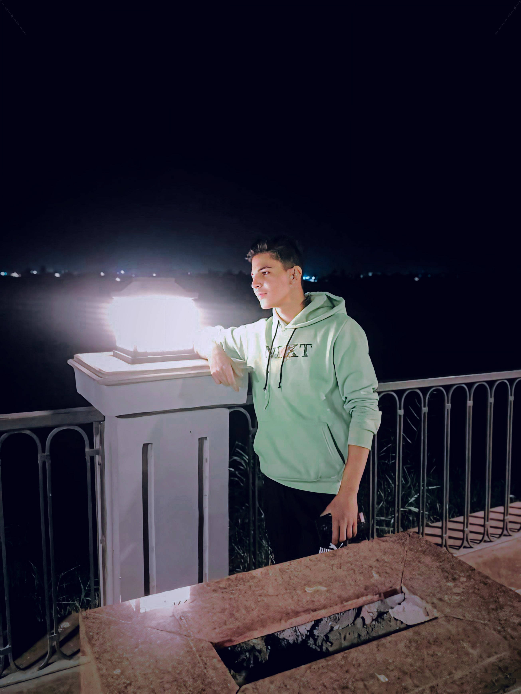

Hamo - Professional Developer
حمو مطور محترف، مطور مواقع ومطور برامج؛ يتميز بالإبداع في تصميم واجهات المستخدم وابتكار حلول برمجية ذكية وعصرية. شغوف بالتكنولوجيا ومحب للتطوير المستمر، يقدم خدماته بجودة عالية واحترافية نادرة.
واتساب 1
واتساب 2
فيسبوك
انستجرام
احفظ جهة الاتصال